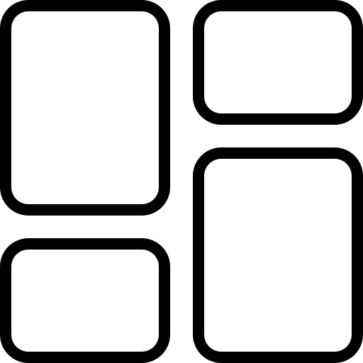
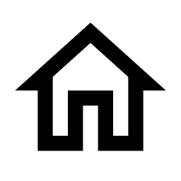
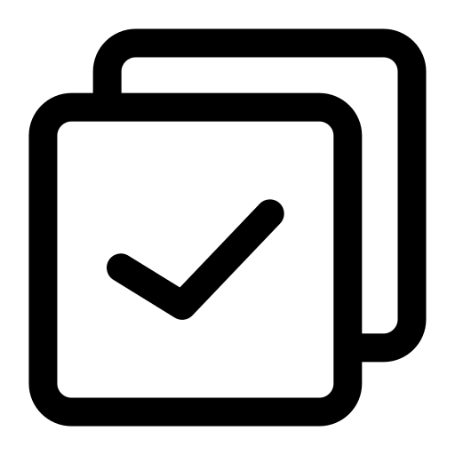
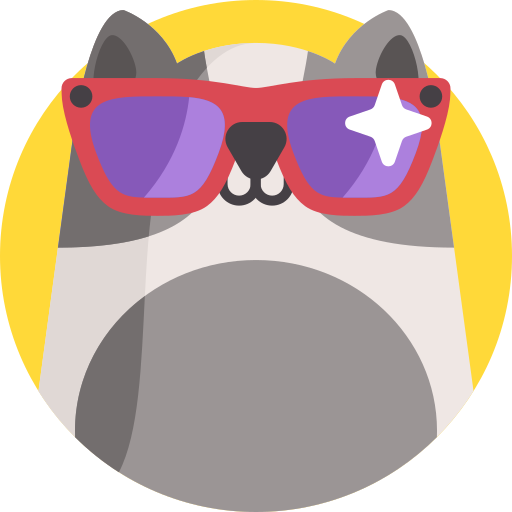

dashboard

Home

Profile

Messages

History

Tasks

Communities

Settings

Support

Privacy

![La imagen muestra un conjunto de figuras geométricas que, en su simplicidad, representan una campana estilizada. La campana se compone de dos semicírculos en la parte superior que se conectan con dos líneas verticales rectas, convergiendo hacia abajo. En la parte superior de la campana, un pequeño círculo funciona como asa, y en la parte inferior, un círculo más grande actúa como badajo. A los lados de la campana, dos líneas curvas paralelas simulan la vibración o el movimiento que se produce al sonar la campana.](./imgIcons/notification.png)

Morgan Oakley
hi there
Morgan Oakley (Qmorgan)
Your Projects
Announcements
Treding